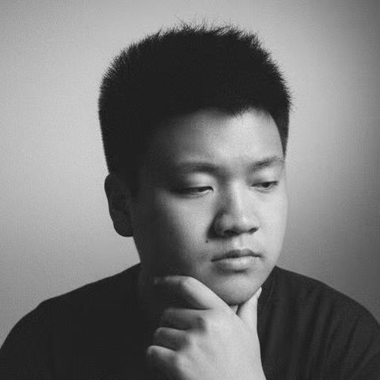

B.Arch. Candidate
School of Architecture, Tsinghua University · Beijing
2024 – Present
School of Architecture, Tsinghua University

I am an undergraduate student at the School of Architecture, Tsinghua University.
I am always happy to talk — feel free to reach out by email.
B.Arch. Candidate
School of Architecture, Tsinghua University · Beijing
2024 – Present